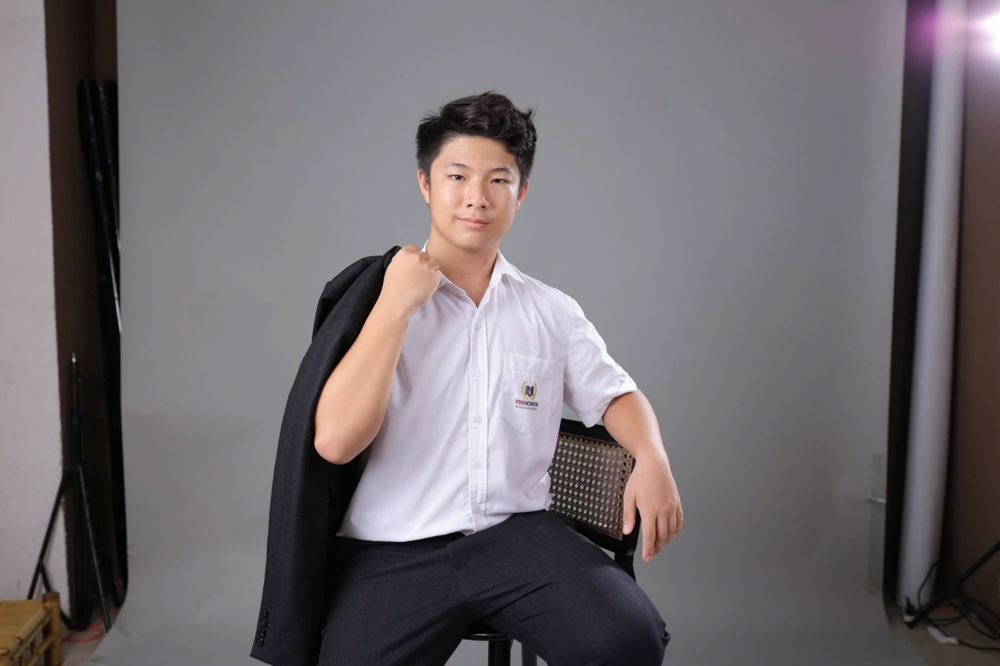
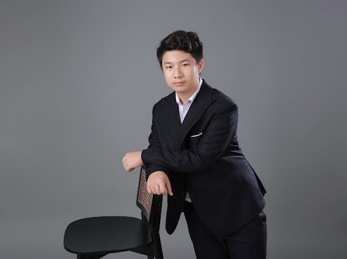

Questions worth exploring.
The observations, ideas, and experiences behind my curiosity about science.

Student portrait · Vinschool Central Park
My interest in aging began with something close to home.
Outings with my mother that once felt effortless now sometimes leave her needing a full day to recover. Seeing this change made me wonder why our bodies gradually lose abilities we once took for granted.
What changes inside our cells as we grow older? How might genetics and molecular biology help us understand those changes? More importantly, can this knowledge help people enjoy healthier, more fulfilling lives?
I hope to pursue a future in scientific research. I am still exploring where that path may lead, but I know I want to keep asking questions that connect scientific understanding with human well-being.
Mathematics has shaped how I approach these questions: not simply looking for an answer, but wanting to understand why it works.
This personal account is a draft and should be reviewed by Khoi and his family before the website is published.

Learning in different ways.
My interests extend beyond academics—from making music to spending time with people and exploring new places.
Beyond academics →